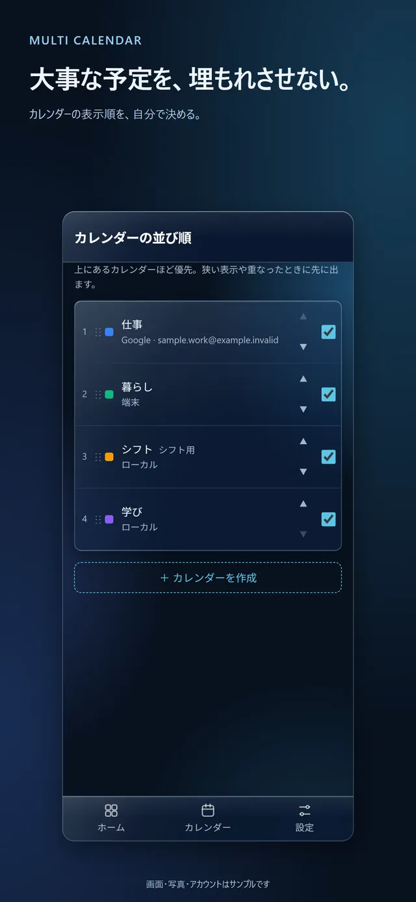
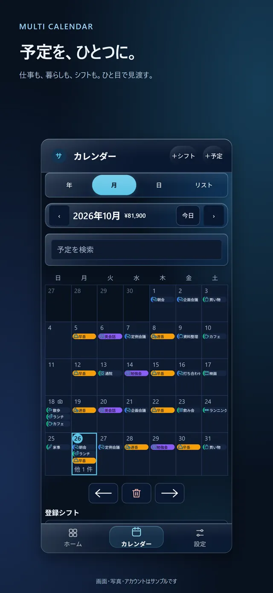
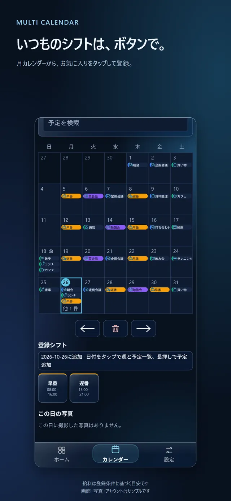
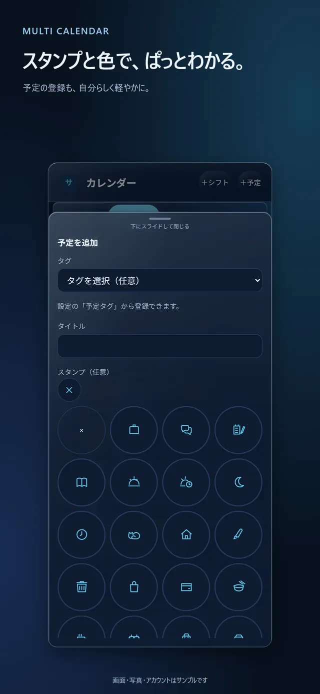
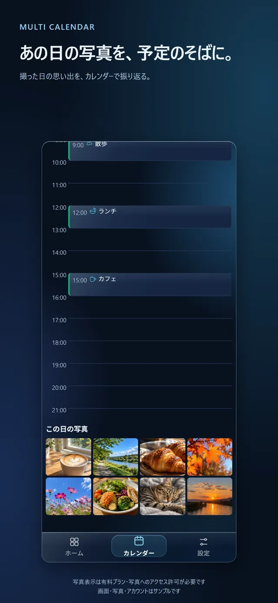
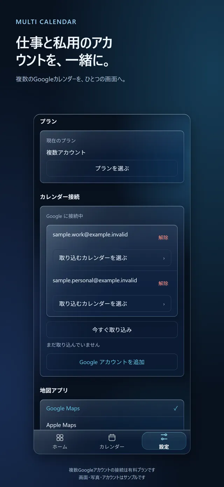

カレンダーの優先順
大事な予定を、狭い枠でも埋もれさせない。
自作のカレンダー、Googleカレンダー、端末のカレンダーをひとつにまとめて表示します。カレンダーの並び順がそのまま優先度になり、表示しきれない日でも上位の予定から先に見えます。
操作のポイント
- カレンダーの並び順を入れ替えて、優先度を決める
- 月カレンダーでは、上位のカレンダーの予定から表示
- 夜勤など日をまたぐ予定は、帯でつながって表示

仕事も暮らしもシフトも、ひとつに。
自作・Google・端末のカレンダーをまとめ、カレンダーごとの優先度で大事な予定を見やすくするアプリです。
App Store の最新版は審査中です
紹介動画を見る
カレンダーの並び順を決めておくと、月カレンダーの狭い枠でも、上位のカレンダーの予定から先に表示されます。
よく使うシフトを一度登録しておき、月カレンダーからシフトのボタンをタップして入れていきます。
日の予定のそばに、その日に撮った写真を並べて振り返ります（有料プラン。端末の写真へのアクセス許可が必要です）。
カレンダーの優先順
自作のカレンダー、Googleカレンダー、端末のカレンダーをひとつにまとめて表示します。カレンダーの並び順がそのまま優先度になり、表示しきれない日でも上位の予定から先に見えます。
操作のポイント

シフト入力
よく使うシフトを登録しておけば、月カレンダーからタップで入力できます。入れたシフトは、ほかの予定と同じ月カレンダーに並びます。
操作のポイント


写真と有料プラン
日の予定と一緒に、その日に撮った写真を表示できます。写真の表示と、複数のGoogleアカウントをつなぐ機能は有料プランです。
操作のポイント
料金や有料プランの詳しい内容は、公開時にご案内します。


自作のカレンダー、Googleカレンダー、端末のカレンダーをまとめて表示します。
カレンダーの並び順で優先度を決め、狭い表示でも上位の予定を先に見せます。
よく使うシフトを登録しておけば、月カレンダーからタップで入力できます。
夜勤など日をまたぐ予定は、帯でつながって表示されます。
予定にスタンプやタグを付けて、ぱっと見分けられます。
その日に撮った写真を予定のそばに表示します。端末の写真へのアクセス許可が必要です。
自作のカレンダーを作るか、Googleや端末のカレンダーをつなぎます。
月カレンダーから、登録済みのシフトをタップして入力します。
月・日・リストで、優先度順に並んだ予定を確認します。
画面はストア掲載用の画像です。画面・写真・アカウントはサンプルです。
音声つきの縦長動画です。自動では再生されません。再生ボタンを押してご覧ください。
アプリの画面は架空のデータで操作しています。
質問を押すと答えが開きます。
自作のカレンダー、Googleカレンダー、端末のカレンダーをまとめて表示できます。複数のGoogleアカウントをつなぐのは有料プランの機能です。
月・日・リストで確認できます。日をまたぐ予定は、帯でつながって表示されます。
写真の表示は有料プランの機能です。また、端末の写真へのアクセスを許可する必要があります。
最新版を App Store の審査に出しています（2026年11月11日時点の確認）。公開日は決まっていません。公開されたらこのページでお知らせします。
基本機能と有料プランがあります。料金や提供条件の詳細は公開時にご案内します。
2026年11月13日時点の情報です。
最新版は App Store の審査中です（2026年11月11日時点の確認）。公開日は決まっていません。料金や提供条件の詳細は公開時にご案内します。ご質問やご要望はお問い合わせからどうぞ。
お問い合わせフォームは受信を確認中です。お急ぎの場合は una.catena.della.morte007@gmail.com へ直接メールでご連絡ください。